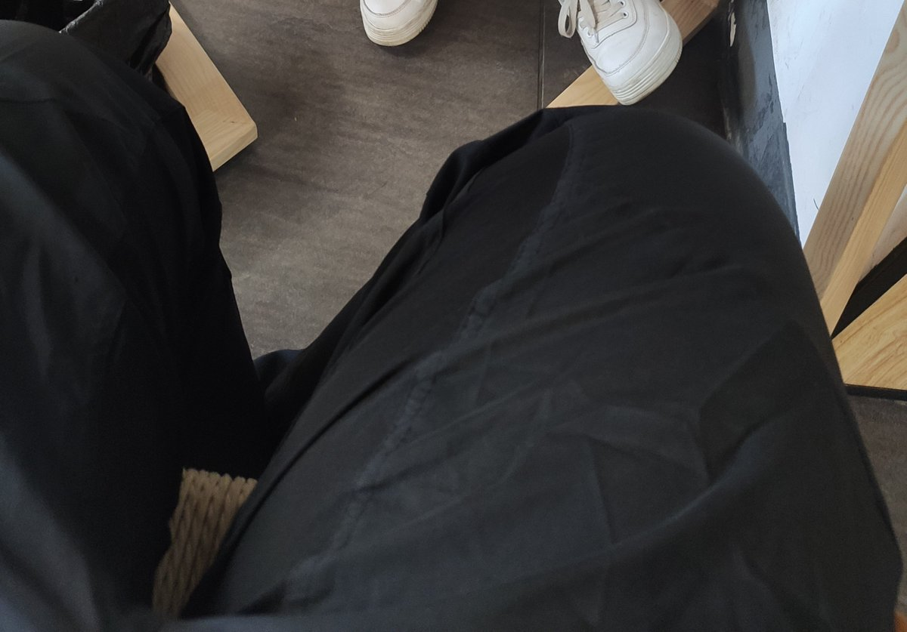
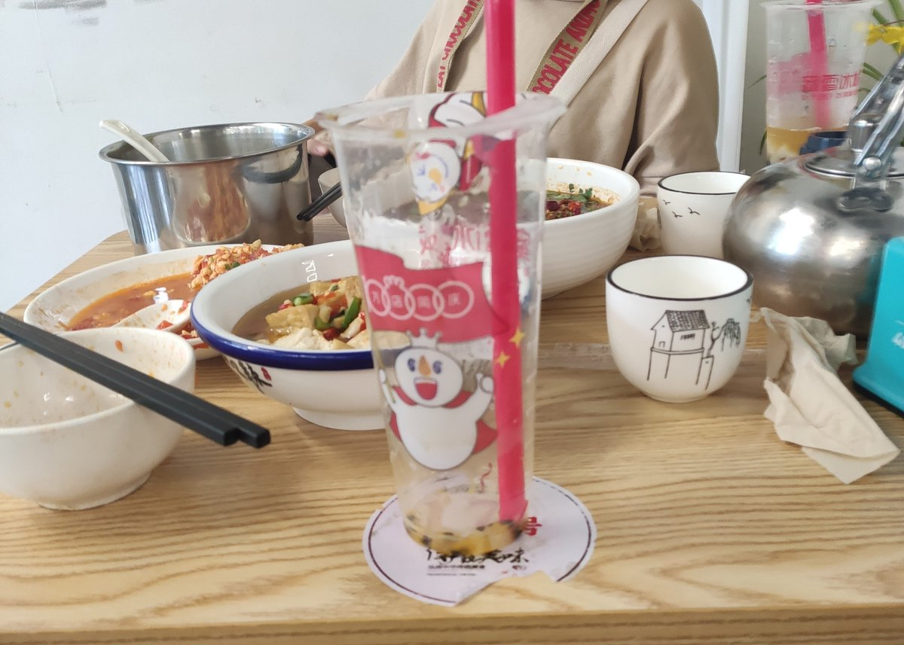
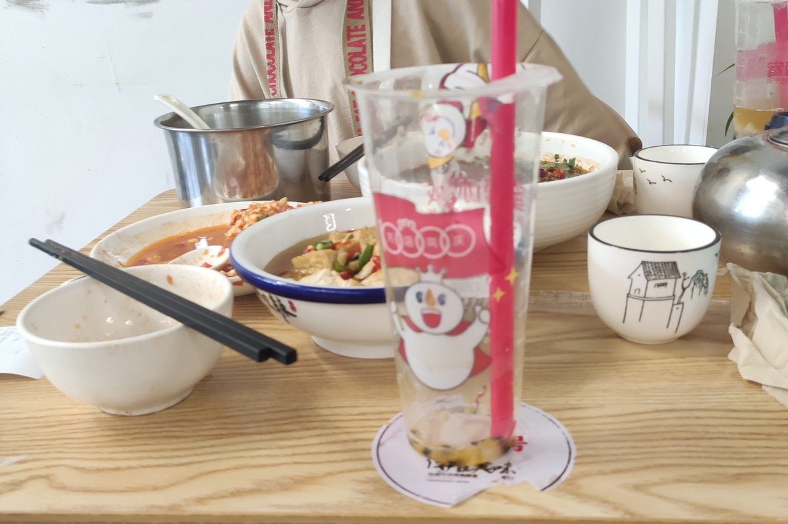

大狐帝国史官邹智萱（笔名段歌文）
@Rococo90933671
六年前的今天，一想到马上要去上大学了，以后不在一个学校，甚至不在同一个城市，就再也没机会了，就鼓起勇气请当时已经喜欢了快五年半的人出来吃了顿饭。
记得那天，散场之后自己哭得很厉害，骑在共享电动上，眼泪哗哗地止不住。
两天后，就去大学报了到。
而后来，直到现在，确实是一种自证预言吧，自己真的再也没有去喜欢过一个人，更没能拥有和异性交往、建立亲密关系的机会……


